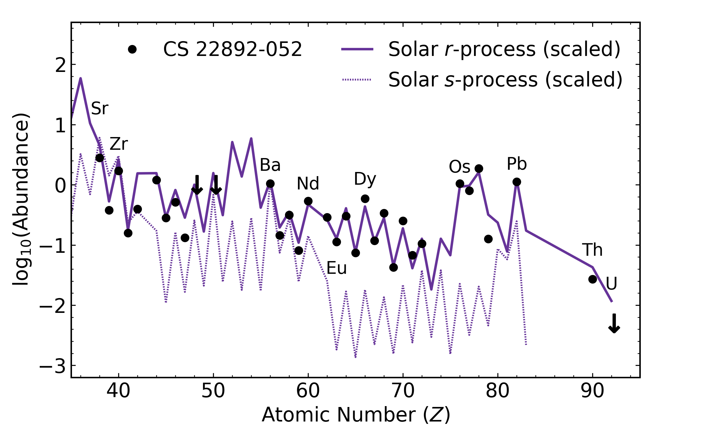
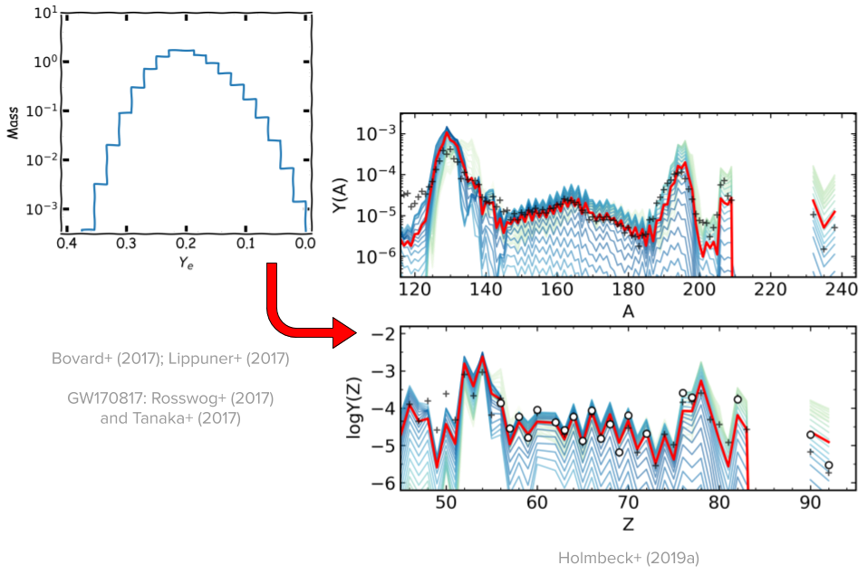

Actinide-Boost Stars Might Not Suggest a Separate r-Process Site
Erika M. Holmbeck
23 May 2019
The r-Process Pattern

McWilliam+ (1995); Sneden+ (2003)
Actinides (Th and U) in Stars
J2038-0023
Placco, Holmbeck+ (2017)
J0954+5246
Holmbeck+ (2018)
Actinide Variation
The actinide-to-lanthanide ratio (Th/Eu) is not the same in all r-process enhanced stars
Actinide variations could be a hint to key r-process characteristics
Holmbeck+ (2019b)
Actinide Production and Ye
Th and U are produced by the r-process
The electron fraction Ye is a key parameter determining the extent of an r-process event
* Ye = [1+(n/p)]-1
Actinide Production and Ye
Th and U robustly produced (and oscillate) at very low Ye
Holmbeck+ (2019a)
Actinide Boost Stars
Abundances of stars enhanced with Th and U can be reproduced by a combination of Ye

Going backwards
What would the abundances themselves suggest for this ejecta distribution?
Actinide-Dilution with Matching Model
Builds empirical mass ejecta distributions as a function of Ye (0.005-0.450)
To explain entire pattern using Zr, Dy, and Th only
Empirical ejecta mass distributions
Distributions differ in very low-Ye region
Holmbeck+ (2019b)
ADM abundance pattern for Ret II
Holmbeck+ (2019b)
The low-Ye component
No discrete difference between actinide-rich and actinide-poor
Holmbeck+ (2019b)
Actinide-boost stars do not necessarily call for a separate r-process progenitor
Is this source an NSM?
GW170817 lightcurve
Lanthanide-poor blue ejecta + Lanthanide-rich red ejecta
Cowperthwaite+ (2017)
Two ejecta components
Stellar Abundances
Xlan = 10-3.8 Xlan = 10-0.8 mred / mblue = 1.6
Holmbeck+ (2018)
GW170817
Xlan = 10-4 Xlan = 10-1.5 mred / mblue = 1.6
Kasen+ (2017)
Two ejecta components
Results derived from r-enhanced stars are consistent with the GW170818 kilonova
Further evidence supporting that an NSM produced the material in r-enhanced stars like Ret II
Special Thanks
Rebecca Surman (ND), Gail C. McLaughlin (NC State), Anna Frebel (MIT)
Trevor M. Sprouse (ND), Matthew Mumpower (LANL)
Timothy C. Beers (ND), Nicole Vassh (ND), Terese T. Hansen (TAMU), Chris Sneden (UT-Austin)
Vinicius M. Placco (ND), Ian U. Roederer (UMich.), Charli M. Sakari (UW), Rana Ezzeddine (MIT)
Grant Mathews (ND), Ani Aprahamian (ND), Toshihiko Kawano (LANL)